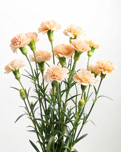
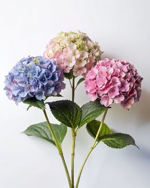
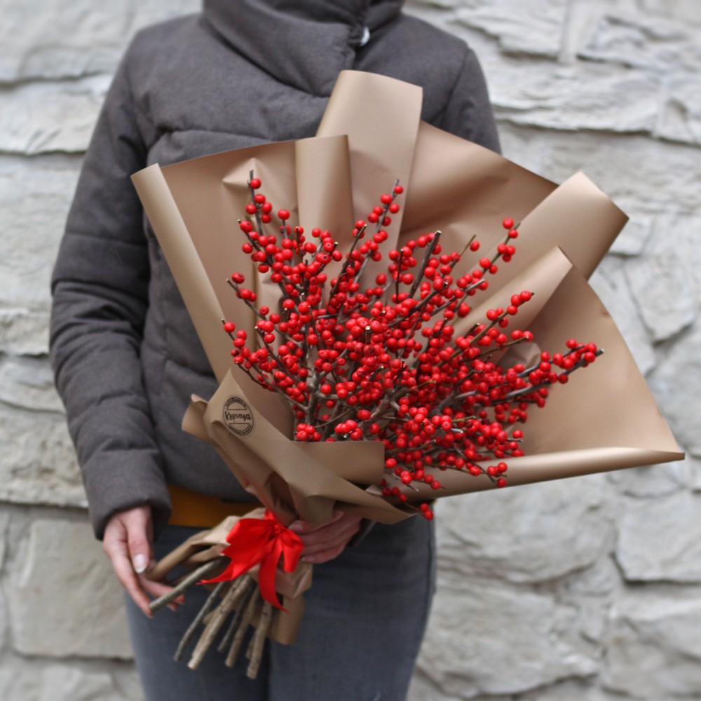
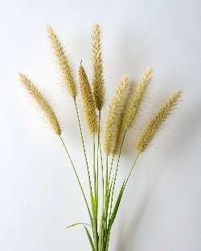

Каталог цветов
|
Альстромерия
Описание

Альстромерия, она же перуанская лилия или лилия инков — это чарующий цветок родом из Южной Америки, который коренные обитатели континента считали даром Солнечного божества и потому наделяли его магическими свойствами. Неудивительно, что красота и грация альстромерии в свое время покорили и Европу.... |
Анемон
Описание
Анемон, называемый также ветреницей – это красивый нежный цветок семейства лютиковых с хрупкими лепестками и непередаваемым ароматом. Изысканный и элегантный, он более всего напоминает крупный бархатистый цветок мака. Эти цветы мало кого могут оставить равнодушным: достаточно лишь раз... |
Антуриум
Описание
Антуриум – это крайне эффектный представитель тропической флоры с яркими цветками и привлекательными листьями родом из Нового Света. Необычные соцветия антуриума представляют собой оригинальные по строению компактные початки цилиндрической или хвостообразной формы, состоящие из множества мелких... |
Бувардия
Описание
Бувардия – это вечнозеленое цветковое растение родом из тропических и субтропических поясов Центральной Америки. Ее пышные соцветия очень декоративны и напоминают россыпи маленьких звездочек. Цветки могут иметь самые деликатные тона от ослепительно-белого и нежно-розового до ярко-оранжевого и... |
|

Гвоздика
Описание
это декоративное садовое растение с легко узнаваемыми цветами красивой формы и самой разнообразной окраски. Существует огромное множество сортов гвоздики очень ярких и порой неожиданных тонов, из которых флористы собирают по-настоящему пестрые праздничные букеты. |
Георгин
Описание
Георгин – это красивоцветущее растение семейства астровых с крупными яркими цветками, собранными в соцветия-корзинки. Цветы георгинов не имеют запаха, однако это с лихвой компенсируется многообразием их форм и расцветок, представленных всей палитрой кроме оттенков синего. |
Гербера
Описание
это красивоцветущее травянистое растение семейства астровых с потрясающими цветками всевозможных расцветок. Родиной герберы является Африка, поэтому ее принято считать символом Солнца, которое светит и греет круглый год. Эти жизнерадостные цветы призваны дарить заряды чистого позитива и фонтаны... |

Гортензия
Описание
Гортензия – это изумительный по своей красоте декоративный садовый цветок с крупными фигурными листьями и большими яркими соцветиями, вызывающими ощущение воздушности и легкости. Свое название, означающее в переводе с греческого «сосуд с водой», она получила как раз из-за большой любви к воде. |
|
Дельфиниум
Описание
Дельфиниум, или шпорник – это красивоцветущее травянистое растение семейства лютиковых, распространенное по всему Северному полушарию. Его колосовидные соцветия состоят из простых, махровых и полумахровых цветков, собранных в густые нарядные кисти. Их оттенок может быть самым разнообразным |

Илекс
Описание
Илекс, или падуб остролистый – это кустарниковое растение с колючими кожистыми листьями, белыми цветками и красивыми яркими плодами родом из Китая. Именно эти декоративные плоды в сочетании с острыми листьями-иголочками и позволяют илексу занимать свое особое место в искусстве цветочной композиции |
Ирис
Описание
Ирис, или касатик – это род травянистых растений с великолепными цветами самых разных форм и расцветок. Ирисы встречаются практически на всех континентах, а их род насчитывает около 800 видов. Эти цветы были известны людям еще в Древнем Египте, однако свое современное название в честь древнегреческой богини Ириды получили значительно позже. |
Кампанула
Описание
Кампанула – это общее латинское название для всех цветковых представителей семейства колокольчиковых. Наиболее распространенные из них можно описать как травянистые красивоцветущие растения умеренных широт с белыми, голубыми, синими или лилово-фиолетовыми цветками. |
|
Кортадерия
Описание
Кортадерия – это высокорослое злаковое растение с длинными метельчатыми соцветиями розового или серебристого цвета родом из Южной Америки и Новой Зеландии. В наши дни известно около 25 самостоятельных видов этого злака, однако лишь их малая часть культивируется в декоративных целях. |

Кустовая роза
Описание
Кустовая роза – это кустарник рода шиповников с оригинальной узнаваемой конфигурацией стеблей и цветков. Данная разновидность роз отличается огромной вариативностью различных расцветок и большим разнобразием форм своих соцветий. |
Левкой
Описание
Левкой, или маттиола – это декоративное красивоцветущее садовое растение с ароматными цветами, распространенное в странах Южной Европы и на Средиземноморье. Благодаря особенности раскрывать свои цветы в вечернее и ночное время левкой и маттиолу в народе часто называют «ночной фиалкой». |

Лизиантус
Описание
Лизиантус, он же эустома Рассела – это изысканно цветущий представитель дикорастущих лугов Центральной Америки. На родине его называют техасским колокольчиком, тюльпановой горечавкой , а иногда и японской или ирландской розой. |
|
Лилия
Описание
Лилия – это род цветковых растений, насчитывающий более 130 видов, распространённых на территории Европы, Азии и Северной Америки. Красивые цветы лилии имеют воронкообразную или колокольчатую форму и любые оттенки от белоснежного до почти черного, а ее мясистые листья могут быть белыми, розовыми... |

Орхидея дендробиум
Описание
Роль орхидеи дендробиум в цветочных композициях • Форма декоративности растения: красивоцветущее; • Значимость цветка в букетах: большая (может выступать в роли акцента), средняя (способен составить основу композиции); • Устойчивость в условиях срезки: высокая (более 2 недель). |
Пион
Описание
Пион – это роскошный величественный цветок, издавна символизирующий здоровье, силу и долголетие. Еще в Древнем Китае пионы стали неотъемлемым элементом грандиозных императорских садов. Лепестки этих цветов использовались в качестве ингредиента при приготовлении основных блюд, десертов,. |
Ранункулюс
Описание
Ранункулюс, или лютик азиатский – это красивый садовый цветок родом из Малой Азии, являющийся заслуженным любимцем флористов во всем мире. Его пышные соцветия имеют особую махровую фактуру и обладают приятным нежным ароматом. |
|
Хризантема
Описание
Хризантема – это род цветковых растений семейства астровых, насчитывающий 42 вида, представленных множеством сортов, в том числе селекционных и гибридных. Мелкие цветки данного растения чаще всего собраны в красочные соцветия-корзинки, но нередко встречаются и соцветия иной формы. |
Эустома
Описание
Эустома, или лизиантус – это крупноцветковое растение родом из Центральной Америки. Ее цветы по виду и строению напоминают полураскрывшиеся бутоны розы, при этом ее гибкий разветвляющийся от середины стебель не имеет шипов. Каждый стебелек эустомы увенчан большим количеством бутонов. |
Нарцисс
Описание
Роль нарцисса в цветочных композициях • Форма декоративности растения: красивоцветущее; • Значимость цветка в букетах: средняя (способен составить основу композиции); • Устойчивость в условиях срезки: низкая (1-4 дня). |

Сетария
Описание
Роль сетарии в цветочных композициях • Форма декоративности растения: декоративно-лиственное, красивоцветущее, сухоцвет; • Значимость цветка в букетах: малая (используется в качестве дополнения к другим цветам); • Устойчивость в условиях срезки: высокая (более 2 недель). |